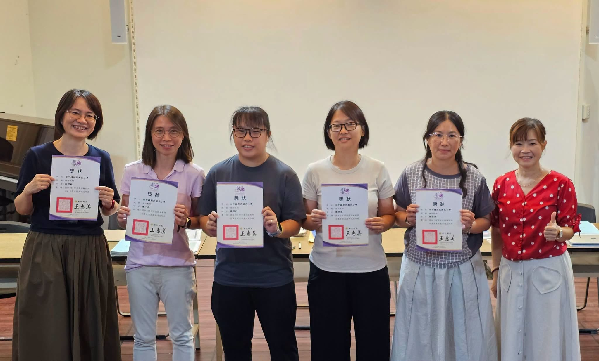
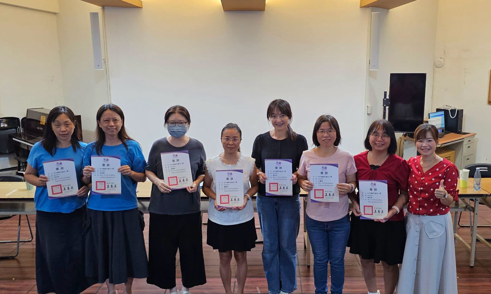

Education isn't only the teaching that happens in class. It's also being willing to pause when a child needs you, and walk beside them for a while.
Throughout the school year, our teachers used the time between and around lessons to notice, encourage, and support children who needed a little extra care. Sometimes it was one caring question, a short chat, an encouraging look — sometimes just sitting quietly beside a child. To that child, any of these can become an important source of strength.
Today, Hsinmin presented the Mentor Teacher Award to thank every teacher who was willing to go one step further, give a little more of their time, and become a steady companion and supporter along a child's growing-up road.
- ❤️Thank you for your attentiveness — for seeing what each child needs.謝謝你們的用心，看見孩子的需要。
- ❤️Thank you for your patience — for walking slowly as children grow.謝謝你們的耐心，陪孩子慢慢成長。
- ❤️Thank you for your giving — for helping children know they are not alone.謝謝你們的付出，讓孩子知道自己並不孤單。
Every child deserves to be seen and understood. Thank you to this group of warm-hearted teachers, who use professional skill and a sincere heart to hold up a sky where children can grow up feeling safe. 🌈
114學年度認輔教師授獎—謝謝每一份溫柔的陪伴 💕
💫 教育，不只是課堂上的教學，更是願意在孩子需要的時候，停下腳步，陪他走一段路。
🫶 老師們在平時上課時間，利用課餘時間關心、陪伴與協助需要支持的孩子。也許只是一句關心、一段談話、一個鼓勵的眼神，甚至只是靜靜地陪在身旁，對孩子而言，都可能成為很重要的力量。✨
💝 今天，我們特別頒發認輔教師獎，感謝每一位老師願意多走一步、多付出一點時間，成為孩子成長路上的支持者與陪伴者。
❤️ 謝謝你們的用心，看見孩子的需要。
❤️ 謝謝你們的耐心，陪孩子慢慢成長。
❤️ 謝謝你們的付出，讓孩子知道自己並不孤單。
💕 每一個孩子，都值得被看見、被理解，謝謝這群溫暖的老師，用教育的專業與真心，為孩子撐起一片安心成長的天空。🌈
Tap 🔊 to listen · 點喇叭聽發音
A mentor is someone who guides and supports you.師長是引導並支持你的人。
A patient teacher waits while a child learns at their own pace.有耐心的老師會等待孩子用自己的步調學習。
One kind word can encourage a child to keep trying.一句溫暖的話能鼓勵孩子繼續努力。
Mentor teachers give quiet support to children who need it.認輔老師默默支持需要幫助的孩子。
A good companion walks beside you, even on hard days.好的陪伴者會走在你身邊，即使在難過的日子。
Every child deserves to be seen and to feel understood.每個孩子都值得被看見、被理解。
Match the word to its meaning
把英文和中文配對
Matched 配對成功：0 / 6